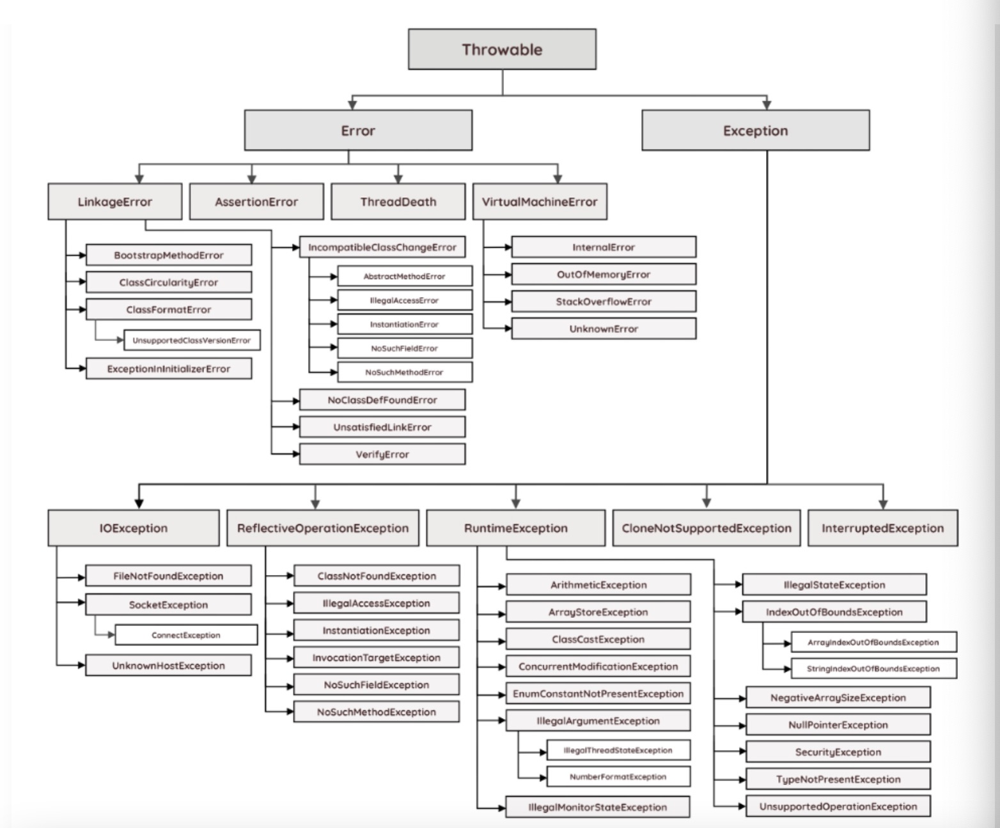

what is an exception
An exception is an unwanted or unexpected event, which occurs during the execution of a program i.e at run time, that disrupts the normal flow of the program’s instructios.
Java exceptions can be of several types and all exception types are organized in a fundamental hierarchy.
Exception Hierarchy


Figure 1:Exceptions hierarchy in Java
-
The Exception class is used for exception conditions that the application may need to handle. Exmaples of exceptions include illegalArgumentException,ClassNotFoundException,and NullPointerException.
-
The Error class is used to indicate a more serious problem in the architecture and should not be handled in the application code. Examples of error include InternalError,OutOfMemoryError,and AssertionError.
Java Errors VS Exceptions
According to the official documentation, an error indicates serious problems that a reasonable application should not try to catch. This refers to problems that the application can not recover from - they should be dealt with by modifying application architecture or by refactoring code.
Here is an example of a method that throws a error, which is not handled in code
1 | public static void print(String myString) { |
In this example, the recursive method “print” calls itself over and over again until it reaches the maximum size of java thread stack, at which point it exits with a stackOverFlowError
1 | Exception in thread "main" java.lang.StackOverflowError |
As seen above, the method throws the error during execution but does not handle it in code
- The program simply exits when the error occurs since it is irrecoverable and requires a change in the code itself.
Exceptions, on the other hand, indicate conditions that a reasonable application might want to catch. These could include problems that can occur at Compile (checked exceptions) or **run-time(unchecked exceptions) ** and can happen rather frequently in most applications.
Especially during development. Checked exceptions should be handle in application code, whereas unchecked exceptions don’t need to handled explicit ly.
Checked VS unchecked
checked excaptions
Exceptions that can occur at compile-time are called checked exception since they need to be explicitly checked and handled in code. Classes that directly inherit Throwable which except RuntimeException and Error are checked exception e.g. IOException and InterruptException etc.
Here is an axample of a method that handles a checked exception:
1 | public void writeToFile() { |
In this example, both statements within the try block can throw IOException,which is checked exception and therefore needs to be handled either by the method or its caller.
In this case, we ought use try-with-resourcesstatement to automatically close of resources.
Unchecked exception
Unchecked exceptions can be thrown “at any time” (i.e. run-time). Therefore, methods don’t have to explicitly catch or throw unchecked exceptions. Classes that inherit RuntimeException are unchecked exceptions e.g. ArithmeticException, NullPointerException.
1 | public class RuntimeException { |
Integer.parseInt()
1 | public static int parseInt(String s) throws NumberFormatException { |
As mentined, since NumberFormatException is an unchecked exception, it don’t not need to be handled in code - only the checked exception was handled, the JVM will throw corresponding Exceptions.
Throw Throws Throwable
Throw
throw is a keyword in java which is used to throw an exception manually. Using throw keyword, you can throw ex exception from any method or block. But, that exception must be of type Java.lang.Throwable class or it’s sub classes.
1 | class ThrowAndThrowsExample |
Throws
throws is also a keyword in java which is used in the method signature to indicate that this method may throw mentioned exceptions. The caller to such methods must handle the mentioned exceptions either using try-catch blocks or using throws keywords. Blow is the syntax for using throws keyword.
1 | class ThrowsExample |
Throwable
Throwable is a super class for all types of errors and exceptions in java. This class is a member of java.lang package. Only instances of this class or it’s sub classes are thrown by the java virtual machine or by the throw statement. The only argument of catch block must be of this type or it’s sub classes. If you want to create your own customized exceptions, then your class must extend this class.
try：指定一块预防所有“异常”的程序。
catch：紧跟在try程序后面，应包含一个catch子句来指定你想要捕捉的“异常”的类型。
throw：用来明确地抛出一个“异常”。
throws：标明一个成员函数可能抛出的各种“异常”。
Finally：不管发生什么“异常”都被执行一段代码。
reference Doc
- https://rollbar.com/blog/java-exceptions-hierarchy-explained/.
- https://javaconceptoftheday.com/difference-between-throw-throws-and-throwable-in-java/